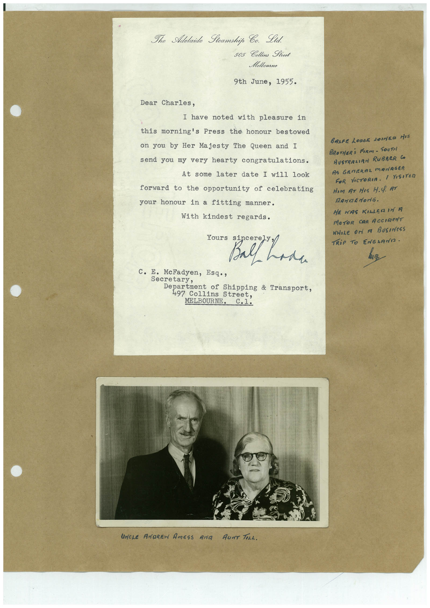

Book 1 · scan 139


Description
Transcription
Context
Review notes
Compare the machine draft with the scan. Handwriting and names need human review.
Artifacts
Edit the artifacts field in this note’s frontmatter to change these records. This summary is generated.
B01-S139-A01 — Letter, Photo & Handwritten note — Book 1, scan 139
Types: Typed document, Letter, Photo, Handwritten note
Scope: Whole scanned page; individual items can be split out during review.
Caption: Not mapped yet.
Caption source: Not recorded yet.
Caption status: unmapped
Machine transcription
The Adolaide Steamship Co. Ltd. 505 Collins Street Meltourne 9th June, 1955. Dear Charles, I have noted with pleasure in this morning's Press the honour bestowed on you by Her Majesty The Queen and I send you my very hearty congratulations. At some later date I will 100k forward to the opportunity of celebrating your honour in a fitting manner. With kindest regards. ours sincer Ball had C. E. McFadyen, Esq., Secretary, Department of Shipping & Transport, 497 Collins Street, MELBOURNE. C.1. UNCLE ANDREW AmESS Ara AunT TeLL. BARFE LONGE JOINED HIS BROTHER'S FIRM- SOUTH AUSTRALIRN RUBARR CO AS GENERAL MANAGER FOR VICTORIA. I VISITeD HIm AT HIs H.Q. AT RANGEdOriG. HE WAS KILLER IN M MOTOR CAR ACCIDeNT WHILe On A BUSINeSS TRiP TO ENGLAND.